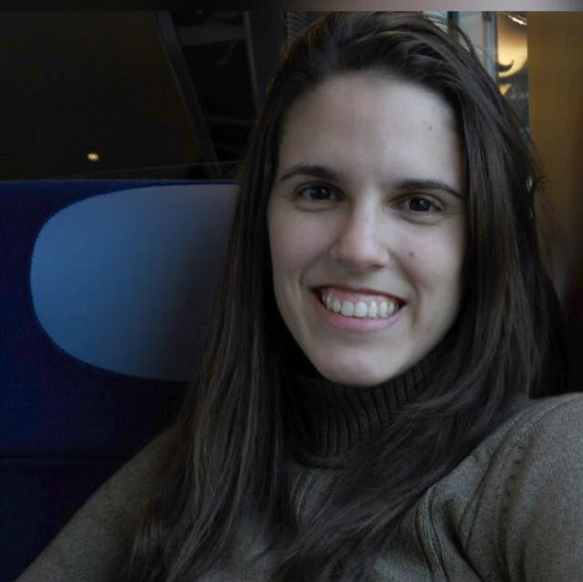

|

|
Olá, Bem-Vindo(a)!Meu nome é Daniela, tenho 29 anos, sou estudante da área de programação e moro em Recife/PE. |
Quer saber mais sobre mim? |
|---|
PessoalSou ariana com ascendente em escorpião, nascida e criada em Recife. Se você sabe o que isso significa, não se assuste, não é tão ruim quanto você pensa! Se não sabe, bom, talvez seja melhor para mim, às vezes esse estereótipo não cai bem por aí. Tenho uma irmã mais velha e estudei na mesma escola a vida toda, lá fiz amigos que cresceram comigo e que estão na minha vida até hoje. Fui também atleta, jogava vôlei, e aprendi muito com isso. O esporte me ensinou a controlar meu nervosismo e ansiedade, a superar as derrotas, a trabalhar em equipe e, acima de tudo, que nenhuma vitória é boa o suficiente se não for compartilhada. Ganhar sozinho não tem a menor graça, são as pessoas que estão com você que fazem a caminhada e a vitória valerem a pena. |
Experiência fora do paísEm 2009, morei durante dois meses em Montréal no Canadá. Meu intuito quando saí do Brasil era estudar inglês, mas essa viagem acabou sendo muito mais do que isso. Lá conheci pessoas muito especiais que carrego até hoje comigo, além de ter tido o prazer de conviver com pessoas de toda parte do mundo. Posso dizer que considero Montréal a cidade com maior miscigenação que já conheci, ter tido a experiência de morar lá e viver essa mistura de culturas todos os dias, me abriu os olhos para quão diferente o mundo e as pessoas são e o quanto a gente tem a aprender com as diversas culturas espalhadas por aí. Ganhei também uma família incrível por lá, guardo com muito carinho até hoje a lembrança dos momentos com meus pais, meus 3 irmãos e com uma outra intercambista que morou junto conosco durante esse período. Eles foram essenciais para que essa viagem desse certo e fosse tão especial. |
Paixões, hobbies e sonhosO maior prazer que eu tenho na vida pode ser resumido em um verbo: "Viajar". Viajar é a minha maior paixão, visitar novos lugares, conhecer pessoas e culturas muito diferentes, ver paisagens de tirar o fôlego, nada me traz maior satisfação do que isso. Para mim, como diria Mário Quintana, viajar é trocar a roupa da alma! Entre as minhas outras paixões estão futebol, seriados, chocolate, família e amigos. É com essas coisas que costumo gastar a maior parte do meu tempo livre. Já com relação aos meus sonhos, não poderia ser diferente, o maior deles é dar a volta ao mundo. Tembém quero muito ter a oportunidade de morar um tempo fora do país e de ir a uma Copa do Mundo de Futebol e a uma Olimpíada. |
ProfissionalSou formada em Administração de empresas e Pós -graduada em Planejamento Tributário. Trabalhei na área de administração com a parte de suprimentos, com planejamento comercial e com mídia digital. Apesar disso, minha paixão na área administrativa está relacionada a contabilidade, finanças, tributário, investimentos e áreas afins. Contudo, eu sempre fui uma “heavy user” de tecnologias e sempre quis conhecer mais o mundo por trás delas. Então em 2020 resolvi mudar de área e buscar novos desafios nessa outra paixão, o mundo da tecnologia. Decidi que é com isso que quero trabalhar e iniciei o curso de Sistemas para Internet na Universidade Católica de Pernambuco (UNICAP). Ainda estou no primeiro período, por isso não possuo grandes conhecimentos técnicos, mas já me apaixonei ainda mais pela área e já consegui aprender um pouco sobre HTML e CSS. No momento, estou em busca de uma oportunidade no mercado de trabalho para colocar em prática esses conhecimentos iniciais e somar muitos outros ao meu aprendizado. Se você chegou até aqui, essa página é uma forma que encontrei de mostrar na prática um pouco do que já comecei a aprender. Espero que tenha gostado, caso queira me oferecer alguma oportunidade, os links para as minhas redes sociais se encontram aqui no rodapé da página, ou você também pode clicar na minha imagem lá em cima que será redirecionado para o meu Linkedin. Muito obrigada pela visita e até a próxima! 😉 |